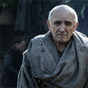

The Starks of Winterfell
Maester Luwin
|  | The maesters are an order of scholars, healers, postmen, and scientists who are trained at a school called the Citadel. House Hightowerwas integral in the Citadel's foundation, and continues to patronize the order. As advisers to the Westerosi nobility, the maesters have largely supplanted the Alchemists' Guild. They are sometimes called "the knights of the mind." Maester Luwin is a maester in the service of House Stark at Winterfell. He delivered all of Catelyn Stark's children. |